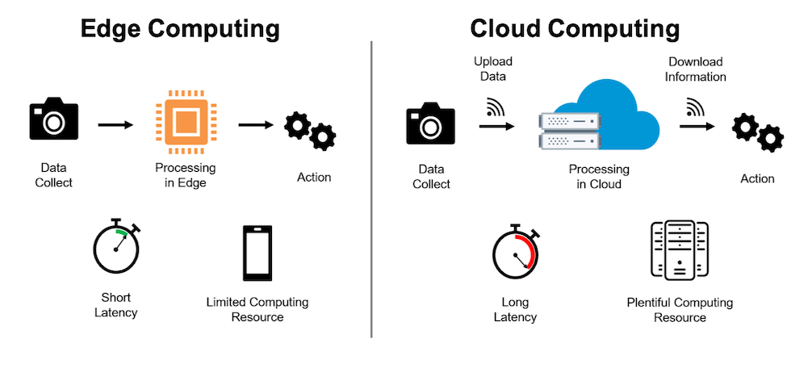
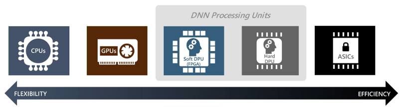

Physical Design Optimization
In the field of Electronic Design Automation (EDA) for Very-Large-Scale Integration (VLSI), physical design optimization focuses on power consumption, circuit performance, and chip area (PPA). EDA tools automate complex tasks in the design process, such as circuit simulation, layout design, and verification, significantly enhancing efficiency and accuracy. Advanced silicon scaling fabrication technologies, including 3D ICs, FinFET, and GAA, produce denser chips with improved PPA. However, the complexity of designs, which now contain various modules on a single chip (SoC-level), has exponentially increased. Recent advancements in EDA encompass efficient design methodologies for emerging technology processes and the incorporation of AI, including machine learning (ML) and reinforcement learning (RL). Our lab (CSDL) researches EDA to improve PPA using both heuristic methods and AI. Our interests span all steps of physical design, analog circuit optimization, standard cell generation, and design-technology co-optimization (DTCO). We also focus on prediction, optimization and generation using ML and RL for each step of physical design and design space optimization (DSO). Additionally, we actively participate in the ISPD contest and ICCAD contest, which are published annually by the International Symposium of Physical Design (ISPD) every summer and the International Conference of Computer-Aided Design (ICCAD) every winter, respectively. Our current research is categorized as below. (Github link) https://github.com/CSDL-postech/Topic_Introduction
Deep Learning Hardware
Deep Neural Networks (DNNs) have proven to show superior performance compared to conventional algorithms in the field of Computer Vision (CV) and Natural Language Processing (NLP). However, due to its computational complexity, high energy consumption and memory demand, both academia and industry find it difficult to port DNN-based tasks on traditional CPUs and GPUs. To tackle this problem, software-based model compression methods were proposed to increase energy and memory efficiency of DNNs. Also, engineers developed domain-specific hardware to efficiently accelerate the heavy DNN computation.
Our lab also studies and develops domain-specific hardware accelerators and model compression techniques for efficient deployment of DNNs. We target acceleration and compression of both traditional Convolution-based Neural Networks (CNNs) and attention-based transformers. Our current research is the optimization of DNN training, where we aim to minimize memory footprint and training latency for effective deployment of DNNs for on-device training (edge computing). We also study model compression techniques for attention-based transformers, such as Vision Transformers (ViT) and Large-Language Models (LLMs).
 